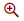
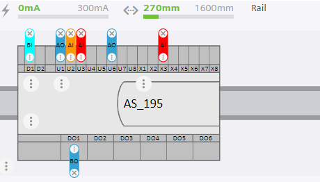
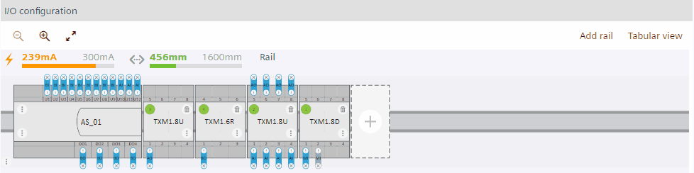
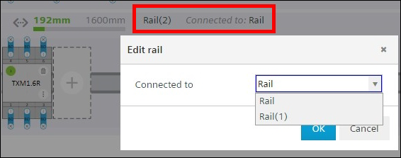
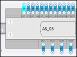
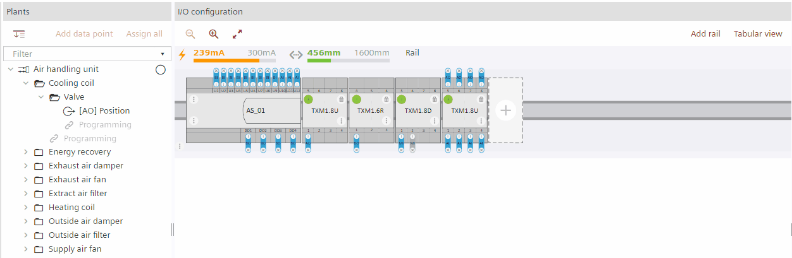

在图形轨道视图中工作
- Go to Building > Building Structure.
- Right-click the automation station and select Go to engineering.
- Open the I/O configuration task.
Zoom In/out
- Go to the I/O configuration area.
- To collapse graphical view of the rails, click and to expand the graphical view of the rails, click

.
- You have expanded/collapsed the view of the rails.
Graphical/Tabular view of rails
- Go to the I/O configuration area.
- Click the Tabular view tab to see the tabular view of the rails and click the Graphical view tab to see the graphical view of the rails.
Online rail engineering
在线铁路工程中的数据点以以下颜色显示：

- Data point - Selected
- Data point - Okay
- Data point is manual/local override
- Data point is alarm/faults.
Move modules or accessories on rails
- Click the Graphical view tab on the I/O configuration area.
- Drag the module or accessory you want to move to another position within the same rail or another rail.
- You moved the module or accessory to another position.
INFO: The position of the PXC device as well as of the bus interface modules TXA1.IBE cannot be changed.
Move rails up/down
- Select the rail that you want to move up or down.
- To move the rails up and down, click for moving the rail up and click for moving the rail down.
- You have moved the rails up or down.
Change connection to other rails
Local rails can be connected to any rail. Decentralized rail can be connected to main or other decentralized rails.
- Select Connected to of the rail that you want to change the connection to another rails.

- Select the rail you want to connect to in the window.
- You have changed the connection to other rails.
Delete rails
- Click the Graphical view tab on the I/O configuration area.
- Select the rail that you want to delete.
- Click on top left of the rail.
- You have deleted the rail. Any belonging modules or accessories are moved to other rails. Automatically created bus interface modules TXA1.IBE are deleted. The main rail cannot be deleted.
Show assigned data point in module or onboard I/O
- Go to the Plants navigation view.
- Select the data point that you want to view on the module.
- Right-click the selected data point and select Show in module.
- The data point is highlighted on the module.


Add a new data point from the library to an I/O module
- Click the Graphical view tab on the I/O configuration area.
- In the Plants navigation view, click
 to set the drop destination focus new.
to set the drop destination focus new. - The data points will be assigned to this plant
 .
.
Note: It is always possible to drag a data point directly to the position in the Plants navigation view, where its functionally belongs too (for example, valve). - Select the Library tab.
- Select the data point you want to add to an I/O module.
- Drop the data point into a slot that fits. Free or compatible I/O slots are displayed in green.
- You added a new data point to an I/O module.
Move a data point
- Click the Graphical view tab on the I/O configuration area.
- Select the data point you want to move to another hardware slots within the same module or of another module or onboard I/O.
- Hover the point over empty hardware slots within the same module or of another module. Empty slots that fit for the data point are indicated in green. Not possible slots are shown in red (see video on top of this section).
- Drop the point into a slot that fits.
- You moved the data point to another hardware slot.
Unassign data points from the module onboard I/O
- Click the Graphical view tab on the I/O configuration area.
- Select the assigned data point that you want to unassign.
- Click × on the data point.
- You have removed the data point on the module onboard I/O.
Delete a data point
- Click the Graphical view tab on the I/O configuration area.
- Select the data point that you want to delete in the Plants navigation view.
- Right-click the selected data point and click Delete.
- You have deleted the data point.
Delete modules or accessories from rails
- Click the Graphical view tab on the I/O configuration area.
- Select the module that you want to delete from the rail.
- Click .
- You have deleted the module or accessory from the rail. Any assigned data points of the deleted module will be unassigned.
您必须删除所属的导轨才能删除自动创建的总线接口模块TXA1.IBE。